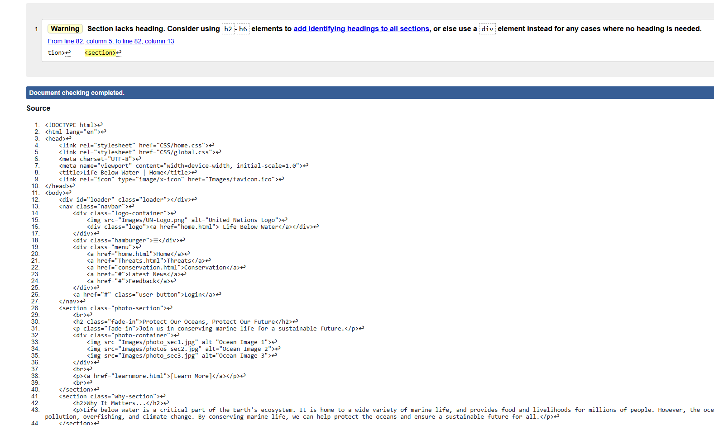
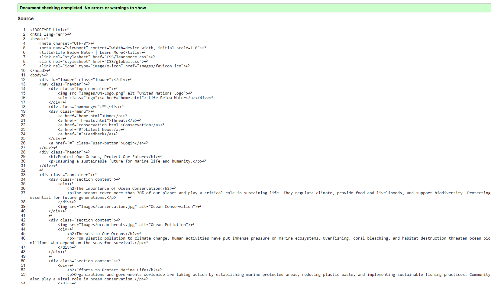
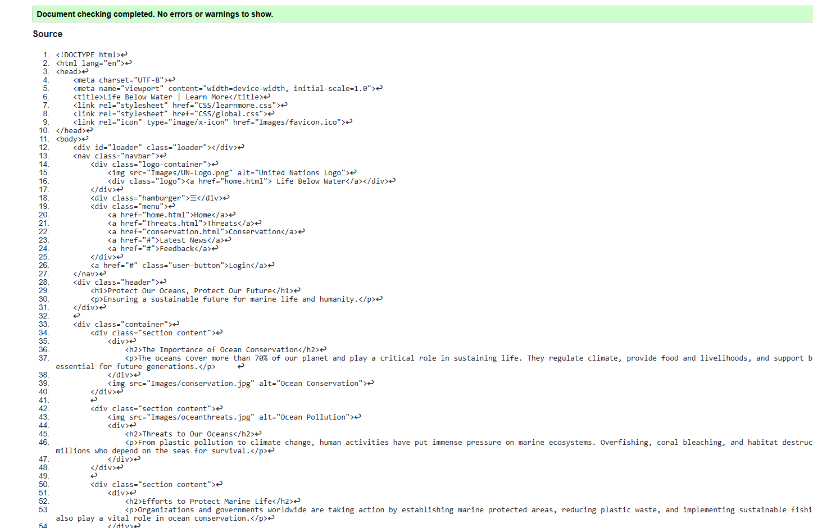

Home Page Validation Report
The validation report highlighted the strengths and areas for improvement in the webpages. It confirmed the proper use of semantic HTML and CSS for structure and responsiveness while identifying minor issues like missing alt attributes and potential accessibility enhancements. Errors related to improper nesting and CSS compatibility were addressed, ensuring compliance with web standards. The report also emphasized optimizing images and refining styles for better performance. Overall, the validation process was valuable in enhancing accessibility, usability, and adherence to best practices.
Back to Page Editor page
Include a link back to the corresponding section of the Page Editor.
Table Page validation report
Include a short reflection on the validation report for the pages you implemented.
Back to Page Editor page
Include a link back to the corresponding section of the Page Editor.
Content Page validation report
The validation report for this page confirmed proper use of semantic HTML and CSS, ensuring structured content and responsive design. Key elements like <nav>, <section>, and <footer> contribute to accessibility, while CSS properties such as flexbox and animations enhance the visual appeal. Minor issues, such as potential improvements in color contrast and image optimization, were noted. Additionally, ensuring all interactive elements are keyboard-accessible further enhances usability. Overall, the validation process helped refine the page’s performance, compliance with web standards, and accessibility for a better user experience.
Back to Page Editor page
Include a link back to the corresponding section of the Page Editor.